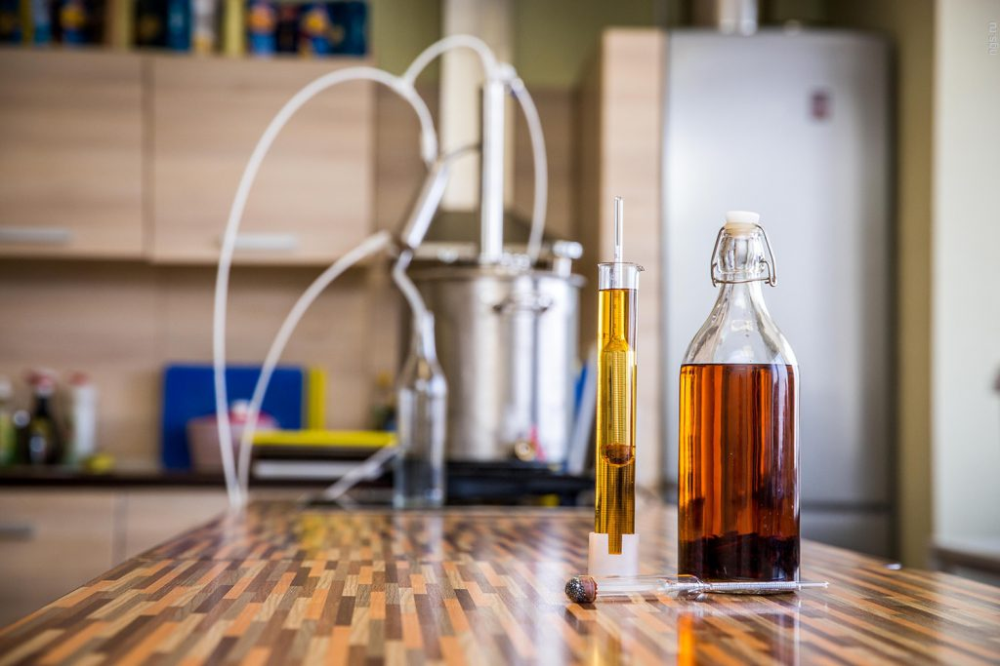

Вино.

ДОМАШНЕЕ ВИНО
При изготовлении плодовых вин происходит сбраживание сахара, содержащегося в самих плодах и добавляемого к выжатому из них соку. В результате процесса брожения из сахара образуется спирт, и, в зависимости от количества сахара, вино бывает большей или меньшей крепости. Плодовые вина, полученные от натурального брожения (без добавления винных дрожжей), могут содержать от 8 до 14% спирта.
Многие плоды содержат недостаточное количество сахара, чтобы изготовить вино определенной крепости. Поэтому к выжатому из плодов соку добавляют столько сахара, сколько необходимо для получения вина желаемой крепости.
Для получения 1° крепости вина в соке должно содержаться 1,7% сахара.
При изготовлении вина зрелые плоды и ягоды перебирают, очищают от сора, грязи, различных примесей и моют.
Затем у косточковых плодов (вишни, сливы) удаляют косточки, после чего плоды сразу же измельчают (можно на мясорубке). Через мясорубку также пропускают предварительно разрезанные на мелкие части крупные плоды (яблоки, груши).
Если нет специального пресса, полученную через мясорубку мезгу отжимают руками с помощью сложенных вдвое марлевых салфеток. Мезгу черной смородины и некоторых других плодов и ягод оставляют неотжатой на несколько дней, пока в ней не начнется процесс брожения. С этой целью мезгу помещают в чистую эмалированную посуду, добавляют немного кипяченой холодной воды и покрывают деревянными кружками с небольшими отверстиями. Поверх кружков кладут чистый гнет.
Выжатый сок обычно процеживают через марлю, разбавляют питьевой водой и добавляют сахар, предварительно разбавленный в соке или в воде.
Подготовленная таким образом для брожения смесь сока, воды и растворенного в них сахара называется суслом. Сусло переливают в заранее подготовленную посуду. Для домашнего вина обычно используют стеклянные бутыли емкостью 3-5 л. Можно использовать и бутыли большей емкости. Бутыли немного не доливают до горлышка.
Для начала брожения лучше всего использовать разводку, то есть чистую культуру винных дрожжей. Это дает ряд преимуществ: ускоряется процесс брожения, образуется больше спирта, улучшается вкус вина, оно лучше сохраняется.
Такие дрожжи можно приобрести в винодельческих лабораториях. Но если у вас нет такой возможности, то проводите брожение на «диких» дрожжах, некоторое количество которых всегда находится на поверхности ягод и плодов. Если такие дрожжи вместе с кожицей попадают в сусло, они забраживаются сами собой. Для большей надежности можно добавить в сусло еще и горсть изюма.
Во-первых, изюм является дополнительным источником «диких» дрожжей, во-вторых, он делает вкус вина более благородным.
В случае когда и после этого брожение будет происходить недостаточно активно, то через три дня после приготовления сусла рекомендуется добавить в него очень небольшое количество хлебных дрожжей, в противном случае сусло или закиснет, или совсем потеряет кислотность. Не рекомендуется использовать пивные дрожжи, поскольку они не выдерживают повышения концентрации спирта и процесс брожения прекращается раньше времени.
Бутыли с суслом плотно закрывают чистыми (ошпаренными кипятком) пробками, в которых предварительно просверливают небольшие отверстия, через которые будет выделяться образующаяся в процессе брожения углекислота. Во избежание попадания в сусло из воздуха вредных микроорганизмов, например бактерий уксусного брожения, в эти отверстия вставляют мягкую, гнущуюся резиновую трубочку, наружный конец которой опускают в стеклянную банку или в стакан с водой. В течение всего периода брожения через эту трубку все время выделяется углекислота. Это хорошо видно по пузырькам, поднимающимся на поверхность воды.
Пробку и место ее соединения с трубкой тщательно заливают парафином, воском или замазывают пластилином.
В помещении, в котором находятся бутыли, в течение всего периода брожения должна быть равномерная температура воздуха – около 18-20 °С, оно должно также регулярно проветриваться. При более низкой температуре сусло может скиснуть. Сусло бродит 25-30 дней. Вначале брожение бурное, затем замедляется, и на дно бутыли начинают оседать мелкие частицы, выпадающие из перебродившего сусла, а в конце процесса брожения на дне бутыли образуется плотный осадок, над которым происходит постепенное осветление сусла.
Через 5-6 дней после полного прекращения брожения, когда на поверхности осветленного сусла больше не видно мелких пузырьков, собирающихся у стенок бутыли в виде цепочки, вино осторожно переливают в чистую бутыль той же емкости. Обычно для переливания вина используются тонкие аптечные резиновые шланги. При этом опускают один конец шланга в бутыль с вином и следят за тем, чтобы не взмутить при этом осадок.
Затем бутыли, наполненные перелитым вином, закрывают ватной пробкой на одни сутки, после чего закупоривают и заливают парафином или воском и ставят в более прохладное помещение с температурой 6-8 °С. Здесь вино выдерживается 1,5-2 месяца. За это время оно обычно осветляется и приобретает винный вкус и аромат, соответствующие тем ягодам и плодам, из которых оно изготовлено. Перед употреблением при желании добавляют сахар по вкусу.
При приготовлении фруктового вина строго соблюдается тщательная чистота всего оборудования, посуды и рук самого винодела. Не допускается использование даже в незначительных количествах гнилых, испорченных, закисших фруктов, всю работу нужно делать очень аккуратно и постоянно следить за температурой помещения и сусла, которая должна все время соответствовать тем условиям, которые для приготовления вина наиболее благоприятны.
Белые вина получают из яблок, груш, желтых слив (алычи), персиков, абрикосов, белой смородины, черешни (желтой), морошки, земляники, арбузов и дынь и из смеси этих фруктов и ягод.
Красные вина получают из красной и черной смородины, малины, вишни, черной черешни, синих слив, ежевики, клюквы, черники, брусники, шиповника, китайского лимонника, актинидии и др.
ВИНО ВИНОГРАДНОЕ СУХОЕ
Для приготовления вина отбирают спелый и сладкий виноград. Из южных сортов пригодны: Шасла белая, Шасла розовая, Шасла мускатная, Алиготе, Мускат розовый, Мускат гамбургский, Лидия и другие.
В домашних условиях и при небольших количествах приготовляемого вина в качестве тары можно пользоваться 10-литровыми стеклянными баллонами. Санитарная обработка их несложна, а прозрачность стекла позволяет следить за процессом приготовления вина.
Виноград в количестве 10 кг (из расчета наполнения одного 10-литрового баллона) сортируют, отделяют ягоды от гребней, удаляют поврежденные и загнившие, небольшими порциями выкладывают в дуршлаг, установленный над эмалированным ведром, и разминают тыльной частью кулака.
Полученные сок и мезгу сливают в баллон, накрывают его марлей и ставят для брожения в теплое место с температурой 25-28 градусов на 2-3 дня.
Правильное брожение можно обеспечить специальными культурами винных дрожжей. При их отсутствии брожение вызывают с помощью «диких» дрожжей, имеющихся как на поверхности ягод, так и в воздухе.
При наличии ручного пресса виноградный сок можно получить путем прессования. При этом вино получается менее терпким, поскольку косточки винограда, содержащие дубильные вещества, в брожении не участвуют. Но при этом под кожицей ягод находятся ароматические вещества, которые при отжатии сока на ручном прессе из винограда не извлекаются полностью, и вино получается менее ароматным.
При брожении размятых ягод вино более ароматное, но несколько терпковатое.
В зависимости от температурных условий на 2-й или 3-й день брожения сусла мезга всплывает, а сок выделяется в нижней части баллона. На 6-7-й день сок из баллона сливают через дуршлаг в эмалированное ведро, а мезгу отжимают руками над дуршлагом.
Собранный виноградный сок сливают в чистый баллон, устанавливают водяной затвор и ставят на дображивание.
Водяной затвор представляет собой резиновую трубку диаметром 8-10 мм и длиной 30-40 см, один конец которой герметически вмонтирован в крышку баллона при помощи алебастра, гипса, парафина или воска, а Другой конец погружен в стакан с водой (см. рис.).
Процесс сбраживания виноградного сахара на спирт протекает при отсутствии кислорода воздуха. Если герметичность водяного затвора в процессе брожения будет нарушена, внутрь баллона попадет кислород воздуха, который вызовет разложение спирта на уксусную кислоту и воду.
Дображивание сока под водяным затвором производят до полного прекращения брожения, которое, в зависимости от температурных условий, может длиться 12-20 дней.
В процессе брожения виноградный сок мутный, что объясняется действием дрожжей.
Признаки окончания брожения следующие: в стакане с водой перестают выделяться пузырьки газа, дрожжи оседают на дно баллона, и вино частично самоосветляется.
Положение мезги в баллоне на 3-4-й день с начала брожения (а); водяной затвор (б)
Слив сока с осадка при помощи сифонной трубки
По окончании брожения его при помощи сифона осторожно сливают с осадка дрожжей в чистый баллон, вновь устанавливают водяной затвор и ставят баллон в холодное место (погреб) с температурой 8– 12 градусов на 2-2,5 месяца. При холодном хранении вина под водяным затвором виннокаменная кислота оседает на стенках и дне баллона в виде мелких кристаллов. Кислотность резко снижается, вино самоосветляется и становится прозрачным.
Очищенное вино разливают в чистые бутылки или баллоны доверху, с небольшим воздушным пространством между пробкой и вином, и укупоривают.
Хранить готовое вино следует в холодном месте (погребе, подвале).
Полученное вино называется сухим, так как содержащийся в винограде сахар почти полностью перебродил на спирт. Сахаристость сухого вина незначительна. При малой сахаристости винограда (меньше 20%) вино не будет иметь достаточного количества спирта, что может вызвать его порчу (появление плесени и т. д.). Для улучшения его качества добавляют свекловичный сахар в количестве 50– 100 г на 1 л сока.
Лучше всего использовать для вина дубовую бочковую тару.
Перед приготовлением вина новые дубовые бочки следует замачивать чистой холодной водой в течение 10 дней, ежедневно меняя ее.
Места, дающие течь, ремонтируют. После замачивания новые бочки заливают кипящей водой с кальцинированной содой (25 г на ведро воды), затем воду сливают и бочку тщательно промывают.
Старые бочки для хранения вина пригодны только из-под вина. Их замачивают в течение трех дней, ежедневно меняя воду, затем пропаривают кипящей водой с добавлением кальцинированной соды (25 г на ведро воды), после чего тщательно ополаскивают холодной чистой водой.
Замоченную бочкотару за сутки перед наполнением необходимо окурить серой, чтобы предупредить постороннее брожение. Для этого чистую серу в количестве 15-20 г укладывают в чашечку окуроч-ного приспособления, состоящего из проволоки длиной 50-60 см и закрепленной на ней металлической чашечки диаметром 2 см.
Уложенную в чашечку серу зажигают, через шпунтовое отверстие спускают в бочку и держат до полного сгорания, после чего приспособление извлекают.
Для начального брожения дробленого винограда и отделения сока от мезги применяют специально приспособленную бочку, в которой одно из доньев снято, а в нижней части бочки просверлено отверстие диаметром 5-8 мм, закрываемое длинной деревянной пробкой.
Способ и последовательность приготовления вина в бочкотаре. Зрелый виноград сортируют, отделяют ягоды от гребней, удаляют поврежденные и загнившие, дробят вручную или на деревянной двухвалковой дробилке. Полученные мезгу и сок сливают в бочку, наполняя ее не более чем на % емкости. Затем бочку закрывают снятым дном, а сверху кладут чистую ветошь. Для брожения бочку устанавливают на табурете в теплом помещении. НаЗ-4-й день, когда мезга поднимется кверху, полученный виноградный сок сливают через нижнее отверстие бродильной бочки, а мезгу отжимают вручную или на ручном виноградном прессе.
Полученное виноградное сусло сливают в подготовленную бочку, в шпунтовое отверстие устанавливают водяной затвор, в месте его установки хорошо обмазывают трубку гипсом или алебастром, чтобы воздух извне не поступал в бочку. На 12-20-й день (в зависимости от температуры помещения) выделение пузырьков газа в стакане водяного затвора пре-. кращается и бурное брожение заканчивается.
Полученному вину дают отстояться еще два дня, после чего водяной затвор снимают и при помощи сифона вино сливают с осадка дрожжей в эмалированное ведро, а затем переливают в подготовленную бочку, наполняя ее «под пробку».
Затем бочку переносят в холодный подвал и выдерживают 3-4 месяца, чтобы винный камень выпал в осадок. После этого кислотность вина значительно уменьшается, оно самоосветляется и становится прозрачным.
Готовое вино разливают в чистые бутылки или баллоны на 1-2 см ниже пробки и герметически укупоривают. Хранят их в холодном подвале или погребе в лежачем положении.
Сезон приготовления – сентябрь.
ВИНО ИЗ МАЛИНЫ
Спелые ягоды малины разминают ложкой и помещают в бутыль или чистый бочонок. Добавляют в виде сиропа сахар и воду в соотношении: 1 кг сахара и 1,5 л воды на 1,5 кг ягод. При этом соотношении получается вино крепостью 16-18°. Брожение начинается раньше и протекает полнее при добавлении сахара в два приема.
Размешав смесь, ее оставляют при температуре 16-18 °С, размешивая несколько раз вдень деревянной ложкой для предупреждения появления уксуснокислого брожения и плесени на поверхности. Не менее !/ю части сосуда оставляют свободной, чтобы сок не переливался во время бурного брожения.
Через 7-8 дней сок отделяют от плодовой массы и наливают в бутыли, в которых брожение продолжается, но уже не бурное, а тихое.
Тихое брожение длится 5-6 недель. В этот период бутыли должны быть плотно укупорены пробкой (деревянной, каучуковой, пробковой). В отверстие пробки вставляют резиновую трубку, конец которой погружают в сосуд с водой. Выделяющийся при брожении углекислый газ выходит через трубку, но внешний воздух не имеет доступа к бродящей жидкости и не может внести в нее нежелательные ферменты.
Через б недель осадок выпадает на дно и вино становится прозрачным. Его наливают в бутыли или бутылки, плотно укупоривают пробками и выдерживают около двух месяцев, в течение которых улучшаются его вкусовые качества. Через два месяца после прекращения брожения вино готово к употреблению. Его хранят при температуре 10-12 °С не более одного года. По истечении года вкус вина ухудшается.
Если на 1,5 кг малины добавить 3 л воды и 1 кг сахара, получается менее стойкое вино, содержащее 10-12° спирта; оно легко подвергается уксуснокислому брожению.
ВИНО ИЗ ЯБЛОК
Яблоки используются для приготовления вина двух родов: в виде крепкого яблочного вина с примесью других соков, чаще всего груш и рябины, в количестве, не превышающем 20%, и в виде сидра, представляющего собой яблочный сок с добавлением сахара или без него, искусственно насыщенный углекислотой.
Необходимо также отметить, что из яблок можно приготовить любой сорт вина, и в то же время, несмотря на то что сортов яблок выведено садоводами очень много, ни один сорт, как бы хорош он ни был, в отдельности не удовлетворяет нужным условиям, и только удачно и умело выбранная смесь яблок различных сортов может дать вино гармоничное, прочное, ароматное и вкусное.
Кроме того, яблочные соки и вина используют как купажный материал при приготовлении вина из слив, кизила, облепихи, абрикосов, алычи, барбариса, прибавляя к этим сокам до 20% яблочного сока, а также для приготовления купажных вин – сухих, крепких и десертных.
Культурные сорта яблок, используемые для приготовления яблочных вин, должны отличаться высоким содержанием сахара, быть ароматными, иметь некоторую терпкость и содержать достаточно кислот.
В лесных яблоках сахара содержится значительно меньше, чем в культурных сортах. Однако они, обладая хорошим яблочным ароматом, содержат значительное количество кислот и дубильных веществ. Из них можно приготовить хорошие вина, а также их можно использовать при изготовлении сидров.
Яблоки, используемые для приготовления вина, должны быть вполне созревшими на дереве или достигшими зрелости в лежке и иметь свойственные им окраску и аромат.
В отношении пригодности различных яблок для изготовления вин их можно распределить на группы по степени зрелости, времени созревания, вкусу и культурности сорта.
По степени зрелости яблоки могут быть: недозрелые, вполне зрелые и перезрелые.
Недозрелые яблоки – падалица – содержат до 1,5% кислоты, всего 5-6% сахара, не обладают ароматом и пригодны для приготовления столовых и крепких вин; сладкие же вина из таких яблок безвкусны и неароматичны.
В перезрелых яблоках теряется часть содержащегося в них сахара, дубильной кислоты, и без их добавления вино получается непрочное, но благодаря ароматичности такие яблоки более пригодны для изготовления крепких и сладких вин.
Вполне зрелые яблоки, снятые созревшими (летние сорта) или дозревшие в лежке (осенние и зимние сорта),– пригодны с соответствующими добавлениями сахара и кислоты (или других сортов яблок или иных фруктов) для изготовления всякого вина.
По времени созревания сорта яблок бывают: летние, осенние и зимние.
Летние сорта яблок, созревающие в августе-сентябре, менее пригодны для приготовления вина, так как содержат мало сахара, кислот, дубильных и ароматических веществ, а поэтому приготовленное из них вино непрочное, мутное, без вкуса и подлежит быстрому употреблению.
Из культурных сортов яблок в виноделии в основном используются осенние и зимние сорта.
Осенние сорта в тех случаях, когда они успевают вызреть на дереве, подлежат немедленной переработке после сбора.
Для ускорения сбора зрелые яблоки, используемые немедленно в переработку, можно стряхивать с дерева. Однако в ряде случаев осенние яблоки (а зимние всегда) собирают не вполне зрелыми. В таких случаях они подвергаются лежке. Во избежание повреждений наружной кожицы и тканей при падении на землю сбор производится руками, после чего яблоки должны вылежаться в защищенных от мороза помещениях в островершинных кучах высотой 1 м, которые закрывают холстом или соломой.
За это время происходит созревание плодов, крахмал переходит в сахар, из них выделяется вода и газы, в том числе и этилен, роль которого заключается в том, что он направляет работу энзимов на ускорение процессов созревания.
При этом может происходить потеря в весе, которая может достигать 10%.
Время хранения яблок в кучах различно и зависит от количества выделяемого яблоками этилена. Этот процесс происходит быстрее при теплой погоде, чем при холодной. Признаком конца выдержки в кучах служит характерный сильный аромат.
Очень важно не передержать яблоки в кучах во избежание потери сока и излишнего понижения содержания кислот, расходуемых на дыхание плодов. Продолжительное хранение яблок в погребах способствует изменению пектиновых веществ, содержащихся в клеточных оболочках,– они превращаются в растворимые соединения. Вследствие этого процесса клетки плодов отделяются одна от другой, плод становится рыхлым (размягчается). Сок извлекается из таких плодов с затруднением, так как мезга из них получается слизистая, медленно прессующаяся и дающая малый выход сока.
Для вин из зрелых яблок, не подвергшихся длительному дозреванию после съема, свойствен более нейтральный, свежий вкус и аромат, напоминающий виноградное вино. Слишком значительное запоздание с извлечением сока нередко приводит к нежелательному появлению в вине сильного специфического аромата, переходящего в особый привкус, напоминающий вкус яблочных семян. Поскольку в кожице сосредоточены ароматические вещества, ее перед переработкой не срезают. Готовить вино исключительно из сортов с зеленой кожицей не рекомендуется, так как они дают почти бесцветное вино, в то время как в яблочном вине ценится светло-зеленая окраска.
Имеет значение и разделение сортов по их культурности:
1) дикие – лесные или непривитые – обладают значительной кислотностью, терпким, горьковатым и грубым вкусом, малой сахаристостью. В связи с тем что вино из них получается грубое и неароматное, такие яблоки используются лишь для изготовления столовых и крепких вин;
2) простые хозяйственные и столовые сорта – используются для приготовления прочных вин. Для сладких вин они малопригодны, поскольку малоароматичны и грубоваты на вкус;
3) хорошие и высшие сорта – Ренет, Кальвиль и т. п.– по ароматичности дают вина высокого качества даже не в смеси с другими сортами, но с добавлением недостающей кислоты и сахара.
Яблоки используются для приготовления всех сортов вина. Так, для сидра и для легких столовых вин подходят кисло-сладкие яблоки осенних хозяйственных сортов или смесь сладких с терпкими или кислыми.
Крепкие столовые вина и крепкие вина готовятся из кислых и кисло-сладких осенних и лучших зимних хозяйственных сортов (например, из Антоновки), а для приготовления более грубых крепких вин используются и лесные яблоки, и падалица.
Для сладких десертных и ликерных вин наиболее пригодны ароматичные осенние и зимние сорта кисло-сладкого вкуса.
Райские и китайские яблоки используются для приготовления всех сортов вина с соответствующими добавлениями сахара, воды и пр.
Для получения хорошего вина необходимо смешивать сорта, дающие мутное вино, с сортами, дающими вино прозрачное; сладкие и безвкусные (ранние летние) смешивать с винно-кислыми и терпкими.
Существует большое количество рецептов этих смесей.
Укажем наиболее распространенные и лучшие: 3 части сладких, 3 части терпких и 2 части кислых яблок; 1 часть сладких и 3 части терпких; 2 части сладких и 1 часть терпких; 2 части сладких, 2 части терпких и 1 часть кислых; 1 часть сладких и 2 части горьковатых яблок.
При подготовке яблок для переработки необходимо тщательно отсортировать их и удалить загнившие.
Яблоки нарезают на кусочки и разминают деревянным молотком или пропускают через мясорубку, а затем прессуют. Сок не разбавляют. Добавляют только сахар при соотношении: 1 кг сахара на 6 л сока. Дальше поступают так же, как при изготовлении малинового вина.
В тех случаях, когда приходится готовить яблочное вино из сладких малокислых яблок, для придания вину аромата, освежающего вкуса, прозрачности и прочности к яблокам добавляют другие плоды и ягоды, отличающиеся богатым содержанием дубильных веществ и кислоты. С этой целью чаще всего используют сок рябины, терна, клюквы, черной или красной смородины.
ВИНО ИЗ ГРУШ
Вино из груш делают реже, так как они менее пригодны для этих целей. Это объясняется тем, что они содержат незначительное количество дубильных веществ и кислот, поэтому вино получается безвкусное, непрочное, очень долго не осветляющееся и мутное.
Очень часто груши на вкус слаще яблок, но сахара на самом деле содержат меньше (до 15%). Сорта груш разделяются так же, как и сорта яблок (см. выше).
Необходимо сладкие столовые сорта груш использовать в смеси с кислыми яблоками или добавлять кислоту. Важно груши перерабатывать на вино, пока они созрели не полностью, а слегка жестковатые и семена их только что начали чернеть; они подлежат немедленной переработке, ибо, если оставить их дозревать в лежке, они дадут вино очень слизистое.
Из груш желтого цвета получается вино янтарно-темного цвета, поэтому их предпочитают зеленым.
Из груш диких лесных и груш грубых сортов – мелких, терпких и жестких – получаются вина более прочные и прозрачные, но малоароматные; до переработки эти груши должны вылежаться в кучах, пока не станут мягкими. Недостаток лесных груш – большое количество каменистых клеток в мякоти, мезгу нельзя оставлять настаиваться, так как в ней легко развиваются вредные микроорганизмы.
Для приготовления хороших вин используются груши с тонким ароматом и пряным винно-кислым вкусом. Тем не менее грушевые вина по качеству хуже яблочных.
Самое легкое грушевое вино называется луарен распространено во Франции наряду с сидром.
Приготовление вина из груш осуществляется так же, как и из яблок, с теми же особенностями, но с отличием в том, что грушевое вино необходимо всегда осветлять, например путем прибавления 20% клюквенного сока.
ВИНО ИЗ СЛИВ
Из желтых и белых слив приготавливают белое вино, а из синих – красное (темно-розовое). Желтые сорта более подходят для сладких ароматных вин, а мирабели – для столовых и крепких вин. Вино из желтых слив обладает золотисто-желтым цветом и привкусом жженого сахара.
Простые сорта синих слив более пригодны для виноделия. Вина из них получаются прочнее, чем из венгерки, ренклода и других сортов, более ценных для потребления в свежем и сушеном виде.
Вина из слив обладают высоким качеством, однако трудность извлечения сока, малый его выход, трудная осветляемость вина и медленное созревание (не менее одного года) являются причиной того, что вино из слив готовят сравнительно редко и только из сочных сортов с высоким содержанием сахара. К сливовому соку рекомендуется прибавлять 20% яблочного.
Сливы для приготовления вина должны быть собраны вполне зрелыми и даже перезрелыми, когда кожица плода возле плодоножки начинает сморщиваться. С целью облегчения прессования нужно дать мезге, освобожденной от косточек, забродить, для чего в нее добавляют воду. Через два-три дня мезгу отпрессовывают и к полученному соку добавляют сахар. Некоторые виноделы рекомендуют добавлять к бродящему соку около Ув части извлеченных косточек, предварительно раздробив их для улучшения аромата вина. Однако в этом случае в вино попадает синильная кислота, очень вредная для здоровья, а присутствие вкуса и запаха горького миндаля нарушает тонкий аромат слив.
После окончания процесса брожения в вине образуется большой осадок, а вино при выдержке долго остается мутным. Оно медленно осветляется. В ряде случаев вино осветляют искусственно. По мере старения в нем появляется очень тонкий приятный букет.
ВИНО ИЗ АБРИКОСОВ
Абрикосы используются для приготовления большей частью вкусного, малоароматного, но прочного вина благодаря значительной их кислотности. Сахаристость абрикосов невелика (до 10%). Вино из абрикосов очень часто приобретает вкус и запах горького миндаля, не очень приятный, если вино приходится пить не холодным, а даже лишь чуть-чуть согретым. Запах становится очень сильным, если в мезгу попали раздробленные косточки абрикосов.
Кислое и прочное вино получается из диких абрикосов. Они мелкие, довольно душистые и носят название тардель. Однако более пряное вино дают культурные сорта.
При приготовлении вин из абрикосов необходимо соблюдать следующие условия:
1) перед измельчением плоды не моют, а лишь обтирают чистой тряпкой от пыли, а затем обязательно удаляют косточки из разрезанных на половинки плодов;
2) из приготовленной мезги сок следует извлекать как можно быстрее, не оставляя мезгу долго на воздухе.
ВИНО ИЗ ЧЕРЕШНИ И ВИШНИ
Желтая черешня обладает сравнительно большой сахаристостью (до 10,6 %), а для ее сортов характерен тонкий аромат. В связи с этим желтая черешня используется для приготовления душистых десертных и ликерных вин. Из темной черешни делают очень душистое, но недостаточно кислое и поэтому малопрочное вино.
Плоды этих сортов содержат мало кислот (в среднем 0,4%) и относительно большое количество сахара. В связи с этим их смешивают с более кислыми ягодами или же приготавливают сусло с добавлением в него кислоты.
В виноделии очень ценится дикая лесная черешня с плодами величиной с крупную горошину, очень горького вкуса. Она растет в лесах Украины и Северного Кавказа. В ней содержится кислот до 0,8-1,0%, а также значительное количество дубильных веществ, но сахара в ней всего 8-9%. Сок из нее получается густого темно-красного цвета. Постепенно горечь уменьшается, и через 8-9 месяцев в вине, приготовленном из этих черешен, ощущается при дегустации очень легкая горечь, придающая ему особый пикантный вкус. После однолетней, а еще лучше двухлетней выдержки горечь в вине исчезает, и оно приобретает особый замечательный букет.
При изготовлении вин из черешни и вишни в самом начале необходимо удалить косточки, чтобы вино не приобрело запах горького миндаля.
Плоды черешни необходимо тщательно измельчить (раздавливанием), ибо они очень трудно отдают сок; однако если подвергаются дроблению вишни и черешни с косточками, то в период этого процесса косточки должны оставаться целыми, так как из раздавленных легко переходит в сок содержащаяся в них ядовитая синильная кислота, и вино приобретает слишком резкий запах горького миндаля и его горечь. Как известно, синильная кислота является сильнейшим ядом.
В связи с тем что в вишнях преобладает яблочная кислота, в вишневом соке и вине часто наблюдается биологическое снижение кислотности. Это надо иметь в виду, понижая кислотность в соке. Однако разбавлять вишневый сок водой необходимо не только для уменьшения кислотности, но и для понижения содержания экстрактивных веществ, делающих вино слишком тяжелым. При переработке на вино сладких сортов вишни их надо смешивать с вишнями, имеющими высокое содержание кислот. Сахар рекомендуется вводить в два приема. Вторую часть сахара добавляют в период бурного брожения. При изготовлении вишневых вин некоторые виноделы рекомендуют добавлять до 20% сока клюквы.
ВИНО ИЗ КРЫЖОВНИКА
Крыжовник занимает одно из первых мест среди других ягод, идущих на приготовление вин, так как вино из него похоже по вкусу и аромату на виноградное и может служить основанием для получения прекрасных шипучих вин, более тонких по вкусу, чем яблочный сидр. Вино из крыжовника настолько похоже по вкусу и аромату на виноградное, что, например, в Англии долгое время под видом виноградного шампанского продавалось крыжовенное игристое вино местного изготовления. Вино из крыжовника изготовляется и пользуется большим спросом в США. Сортов крыжовника существует очень много, но наилучшими из них являются английские крупноплодные сорта и американские.
По окраске кожицы сорта крыжовника разделяются на красные, желтые, белые, зеленые и черные. Из красных сортов получают вино с красноватой окраской, делающей его внешний вид не особенно привлекательным. После длительного хранения вино приобретает золотисто-желтую окраску. Для получения вин красивой зеленоватой окраски лучше использовать зеленые, белые и особенно желтые сорта с тонкой кожицей.
В наше время в виноделии часто отдают предпочтение американским сортам крыжовника. Особо ценен в этом отношении крыжовник с мелкими красными сладкими ягодами, довольно плодовитый и не подверженный грибковым болезням. Отечественные сорта более кислые.
Крыжовник может использоваться для приготовления высококачественных вин всех сортов, в особенности после хорошей выдержки. Сравнительно редко крыжовник смешивают с другими ягодами и плодами, но вполне возможно смешивать крыжовенный сок с соком менее кислых ягод.
Для виноделия необходимо заготавливать крыжовник совершенно зрелый, так как незрелые плоды придают вкусу особый неприятный травянистый привкус. Однако он становится незаметным в крепких сладких винах. Недостаточно созревший крыжовник необходимо использовать только для приготовления сладких вин. В перезрелых ягодах исчезает аромат, в них начинается брожение, и они приобретают неприятный привкус, передающийся вину. Крыжовник необходимо перерабатывать сразу же после сбора.
В случае необходимости сохранять плоды некоторое время их следует держать в сухом прохладном помещении. Крыжовник перед дроблением необходимо тщательно мыть. Полученная мезга бывает вначале такой слизистой, что ее трудно прессовать. Поэтому она должна полежать в холодном месте
2-3 дня, после чего ее прессуют. Однако лучше поступить так: отжать из мезги столько сока, сколько окажется возможным, выжимки же залить водой, прибавить какого-либо сусла с дрожжами чистой культуры и дать постоять в течение 2-3 дней. Начавшееся брожение разрушит клеточки, и тогда при вторичном отжатии этих выжимок получается сок более ароматный.
Настаивать мезгу продолжительное время для лучшего отделения сока не следует во избежание появления травянистого привкуса.
При приготовлении сусла необходимо помнить, что столовые вина из сильно разбавленного крыжовенного сока очень склонны к заболеваниям (нередко в них появляется запах тухлых яиц). Поэтому при изготовлении столовых вин не следует разбавлять сок водой более чем вдвое. Лучше всего заменить воду соком каких-либо малокислых летних яблок, груш или иных ягод. Нередко вина готовят из крыжовника в смеси с белой смородиной и другими ягодами. Вина из крыжовника хорошо осветляются сами собой, приобретая золотисто-желтый, зеленовато-желтый или темно-желтый цвет в зависимости от окраски ягод.
При длительной выдержке качество вин из крыжовника значительно повышается.
В домашних условиях из крыжовника делают вино, по вкусу и аромату напоминающее виноградное, красивого зеленоватого или золотисто-желтого цвета.
Спелые свежесобранные ягоды крыжовника очищают, моют, раздавливают деревянным пестиком или пропускают через мясорубку. Полученную массу (мезгу) сливают в эмалированный бак или большую кастрюлю и оставляют бродить при температуре 22– 24°. Заполняют бак (кастрюлю) на 2/3 объема. Образующуюся из мезги «шапку» ежедневно 3-4 раза перемешивают. При этом на краях бродильного сосуда остается часть мезги, которую следует смывать теплой водой и чистой тряпкой, иначе, соприкасаясь с кислородом воздуха, она может вызвать образование ненужных кислот. Мезга бродит 3-4 дня. Затем выделившийся сок сливают в бутыль, смешивают с определенным количеством воды, добавляют сахар (не более 1/3 всего количества, иначе брожение может прекратиться) и ставят на брожение под водяным затвором.
Бутыль заполняют на 2/3 объема, так как процесс брожения идет довольно бурно, а образующаяся пена поднимается до горлышка.
Через 3-4 дня брожение заметно ослабевает. В это время вносят вторую порцию сахара, тоже раз-
бавленного в воде, а через 7-8 дней – последнюю порцию.
По окончании брожения вино сливают в чистую бутыль с помощью сифона (резиновой трубки), следя за тем, чтобы в нее не попал осадок. Бутыль заполняют доверху так, чтобы пробка вытеснила часть вина, иначе там останется воздух. Бутыль с вином ставят в подвал на 3-4 недели для осветления. После этого вино переливают сифоном в чистую бутыль, а из нее через 3-4 недели разливают в бутылки, которые закупоривают и хранят в лежачем положении, чтобы пробки все время оставались влажными.
ВИНО ИЗ БЕЛОЙ СМОРОДИНЫ
Белая смородина служит прекрасным материалом для изготовления столовых и сладких вин.
Для приготовления вина ягоды белой смородины заготавливают, когда они становятся вполне зрелыми, так как из недозрелых ягод трудно отжать сок и вино получается с неприятным привкусом. Перезрелые ягоды на кустах сильно осыпаются.
При подготовке ягод к измельчению необходимо оборвать все веточки и кисти, так как при наличии их вино приобретает неприятный привкус и сильную терпкость. При изготовлении более терпких вин веточки не удаляют.
В связи с тем что из свежей мезги сок удаляется не полностью, поступают так же, как и в случае приготовления вина из крыжовника.
Белые сорта смородины считаются лучшими для виноделия, так как они менее кислы на вкус, чем плоды красной и черной смородины, и дают белоснежное вино.
ВИНО ИЗ КРАСНОЙ СМОРОДИНЫ
Ягоды красной смородины, используемые на вино, должны быть совершенно созревшими, с ровной, свойственной сорту окраской всех ягод, за исключением двух-трех, находящихся на конце кисти.
Созревшие плоды становятся прозрачными и мягкими и легко раздавливаются. Самые верхние ягоды кисти должны начать сморщиваться вокруг плодоножки. Они приобретают приятный вкус и утрачивают резкую кислотность, и в таком состоянии из них получают наибольшее количество сока. Из 100 кг ягод получается 63-70 л сока.
Заготавливать смородину необходимо в сухую погоду и после того, как высохнет роса. Сок из плодов, собранных в дождливую погоду, получается водянистым, склонным к плесневению.
После сбора ягоды моют, дробят и прессуют. Если смородину нужно некоторое время сохранять, то ее кладут в плоские корзины и ставят в сухое прохладное место. При сборе любого сорта смородины, в том числе и красной, нельзя использовать металлическую посуду.
В тех случаях, когда из смородины сразу же после сбора готовят сок, можно срывать только одни ягоды, захватывая по 5-6 соплодий. Если ягоды будут некоторое время храниться, обрывают целые соплодия вместе с плодоножками.
Перед дроблением ягоды рекомендуется помыть, погружая корзины со смородиной в чаны с водой или орошая их мощной струей из шланга с соплом, снабженным ситечком.
Чистый красносмородинный сок идет на приготовление хороших крепких и столовых вин. Но сладкие вина получаются похуже, так как ягоды смородины малодушистые. Цвет вина чаще всего розово-красный, со временем приобретает рыжеватый оттенок. Особенности приготовления вина из красной смородины те же, что и для приготовления вина из белой смородины.
Очищенные и вымытые ягоды кладут в глиняный или деревянный сосуд, разминают, ставят сосуд в подвал для брожения. После брожения процеживают массу сквозь сито, черпая ее деревянным ковшом и не прикасаясь к массе руками.
После того как сок отстоится, его сливают в бочонок, кладут в него сахар (125 г на 1 л сока), вливают коньяк (1 л на 12 л сока). Бочонок с вином ставят на 6-8 недель в подвал, затем разливают в бутылки, хорошо закупоривают и дают несколько месяцев постоять.
ВИНО ИЗ ЧЕРНОЙ СМОРОДИНЫ
Вино из черной смородины в чистом виде нравится не всем вследствие свойственного ягодам специфического аромата. Для его уменьшения черную смо-родину смешивают с большим или меньшим количеством красной.
Из черносмородинного сока удается приготовить хорошие сладкие вина – десертные и ликерные, похуже – крепкие, а столовые – нравятся своей приторностью лишь любителям. Вино из черной смородины дображивает довольно быстро и затем в скором времени осветляется, приобретая густой фиолетово-красный цвет. Сок и вино из черной смородины часто используются как замечательный купажный материал (для усиления аромата и окраски других вин).
Приготовляют вино из черной смородины также, как малиновое вино.
ВИНО ИЗ ШИПОВНИКА
Для приготовления вина используют или свежие спелые, но твердые ягоды, или сушеные цельные ягоды, или сушеные измельченные ягоды шиповника. Вино из шиповника содержит небольшой процент спирта, но оно богато активными дрожжами и витаминами. Его неправильно называют вином, вернее, это газированный напиток, так как его употребляют не дожидаясь полного разложения сахара.
Плоды шиповника помещают в бутыль и заливают сиропом, приготовленным при соотношении: 500 г сахара, 6-7 л воды и 1 чайная ложка лимонной кислоты на 1 кг свежих или 400 г сушеных измельченных ягод. Чтобы ускорить брожение и дать ему правильное направление, сироп наливают охлажденным до температуры 20 °С и добавляют 5-10 г хлебопекарных дрожжей. Бутыль оставляют при комнатной температуре. Через несколько дней напиток приобретает приятный терпкий вкус и готов к употреблению. Его процеживают и разливают в бутылки, которые плотно укупоривают и сохраняют в холодном помещении.
Если поместить вино в плотно закупоривающиеся бутылки и добавить в каждую бутылку по чайной ложке сахара, брожение будет продолжаться. Выделяющийся углекислый газ газирует напиток.
ВИНО ИЗ ГОЛУБИКИ
4 кг спелой голубики сортируют, удаляют поврежденные плоды и посторонние примеси, выкладывают порциями по 1 кг в дуршлаг, моют путем погружения в ведро с водой, дают ей стечь, после чего слегка разминают вручную. Полученную мезгу и сок помещают в десятилитровый баллон, вливают 2 литра воды, накрывают марлей и завязывают. Затем выносят в темное помещение с температурой 20-25 градусов тепла и выдерживают в течение 4-5 дней. После выдержки настой осторожно фильтруют через чистый мешочный фильтр.
Полученную в фильтре мезгу отжимают и выбрасывают.
Профильтрованную и отжатую жидкость сливают в чистый десятилитровый баллон и добавляют 1,5 кг сахара и 300 г липового меда, растворенных в 1,5 л теплой воды. Затем устанавливают водяной затвор, выносят в темное помещение для брожения на вино и выдерживают под водяным затвором до тех пор, пока брожение не прекратится.
Для осветления полученного вина его сливают с осадка в чистый баллон при помощи сифона, снова устанавливают водяной затвор, выносят в холодное место и выдерживают в течение 2 месяцев. После этого срока, когда вино полностью станет прозрачным, его разливают в чистые сухие бутылки, укупоривают полиэтиленовыми или целыми корковыми пробками, осмаливают и хранят в сухом, холодном и темном помещении в горизонтальном положении.
ВИНО ИЗ ЕЖЕВИКИ И ЧЕРНИКИ
Спелую ежевику или чернику в количестве 3 кг сортируют, удаляют поврежденные плоды и посторонние примеси, выкладывают порциями по 1 кг в дуршлаг, моют путем многократного погружения в ведро с водой, дают ей стечь, после чего слегка разминают тыльной стороной кулака.
Полученные мезгу и сок сливают в чистый десятилитровый баллон, вливают 3 литра теплой воды, покрывают горлышко баллона марлей, завязывают и выносят в теплое помещение и выдерживают в течение 4 суток при температуре 20-27 градусов тепла.
После выдержки настой фильтруют через чистый мешочный фильтр. Оставшуюся на фильтре мезгу отжимают и выбрасывают. Отфильтрованную и отжатую жидкость сливают в чистый десятилитровый баллон.
Количество натурального сахара, содержащегося в ежевике, составляет 2,8% и недостаточно для получения требуемого количества спирта в вине, поэтому необходимо добавить сахар в виде сиропа. Для этого берут 1,5 л теплой воды, добавляют 1,7 кг сахарного песка, 300 г липового или цветочного меда, размешивают до полного растворения и доливают в баллон с отфильтрованной жидкостью, после чего устанавливают водяной затвор, герметизируют путем обмазки горлышка свежеразведенным алебастром и помещают в теплое место для брожения на вино.
Выбраживание смеси под водяным затвором производится до полного прекращения брожения, которое, в зависимости от температурных условий, может длиться 25-50 дней.
Признаки прекращения брожения следующие: в стакане водяного затвора перестают выделяться пузырьки газа, дрожжи оседают на дно баллона, и вино частично самоосветляется.
В процессе брожения следует следить затем, чтобы не была нарушена герметичность алебастровой обмазки, которую необходимо через каждые 5– 6 дней подновлять путем нанесения тонкого слоя свежего раствора. При нарушении герметичности водяного затвора кислород воздуха может попасть внутрь баллона и вызвать уксусное брожение.
Для осветления полученного вина его сливают с осадка в чистый баллон, снова устанавливают водяной затвор, выносят в холодное место и выдерживают в течение 2 месяцев. После этого срока готовое вино снимают с осадка при помощи сифона и разливают в чистые сухие бутылки, укупоривают полиэтиленовыми и целыми пропаренными корковыми пробками, осмаливают горлышко расплавленной смолкой или сургучом и хранят в сухом, холодном, темном помещении на полках в горизонтальном положении.
Для получения посусладкого или сладкого вина необходимо увеличить количество добавляемого сахара от 500 г до 1 кг на указанную выше порцию.
ДОМАШНЕЕ ШАМПАНСКОЕ
Легкий приятный игристый напиток, называемый условно шампанским, содержит незначительное количество алкоголя и требует немного или не требует совсем добавления готового спиртного. Такое шампанское в жаркую летнюю погоду хорошо утоляет жажду, не вызывая в то же время отрицательных побочных явлений.
ЛИМОННОЕ ШАМПАНСКОЕ
4 лимона средней величины нужно тонко нарезать и с каждой дольки снять цедру. Внутренность долек очистить от белой кожицы и семечек, добавить к лимонам 250 г чистого перебранного изюма и 250 г натурального меда. Все хорошо перемешать, чтобы из лимонов вышел сок и мед разошелся. Затем смесь залить 10 л воды, добавить туда предварительно срезанную цедру и все это вскипятить. Отдельно приготовить чашку дрожжей, которые надо развести жидким тестом из качественной пшеничной муки, которую обычно используют для приготовления блинчиков. Когда тесто поднимется, его нужно перелить в деревянную кадочку, но если такой у вас нет, можно налить в эмалированную кастрюлю или другую неокисляющуюся емкость.
Остывший немного лимонный сироп небольшими порциями заливают в кадку и при этом постоянно помешивают. Напиток нужно оставить бродить до того времени, пока изюм, цедра и лимонная мякоть не поднимутся на поверхность. Их сразу же удаляют, а шампанское разливают по бутылкам. В каждую бутылку опускают по две изюминки и по кусочку цедры. Бутылки нужно плотно закупорить, а еще лучше – засмолить пробки, и поставить в прохладное место. Настоятельно не рекомендуем замораживать напиток. Через три недели проверяют: если шампанское «играет», оно готово, если же нет, пусть постоит еще немного. Кому будет недостаточно сладости, можно, прежде чем пить, в каждый стакан добавить чайную ложку сахарного песка.
ШАМПАНСКОЕ ИЗ КРАСНОЙ СМОРОДИНЫ
Заполните бутыль до половины красной смородиной, добавьте до горлышка кипяченой воды и поставьте в прохладное место. Ежедневно 1-2 раза бутыль хорошо взбалтывайте. Через неделю можно попробовать на вкус, настоялась ли вода. Если нет, то нужно оставить еще на 3-4 дня. Затем профильтрованный настой красной смородины разлейте в бутылки из-под шампанского. В каждую бутылку положите 200 г сахарного песка, налейте 30-50 мл рома (можно спирта или водки, но будет хуже), 70-100 мл шампанского и добавьте 3 изюминки. Бутылки сразу же хорошо закупоривают и хранят в погребе или хотя бы просто в темном прохладном месте. Через месяц можно попробовать. Если не «заиграет», следует подержать в прохладном месте еще неделю-другую.
ШАМПАНСКОЕ ИЗ ЛИСТЬЕВ ЧЕРНОЙ СМОРОДИНЫ
Берем 100 г молодых листьев черной смородины, если нет свежих, подойдут и сушеные. Кладем их в бутыль большой емкости и добавляем 12 л холодной кипяченой воды. Освобождаем от цедры 3-4 лимона, мякоть очищаем от белой кожицы, косточек, измельчаем на небольшие ломтики и тоже кладем в бутыль. Далее добавляем 1-1,5 кг сахара, ставим бутыль в теплое место, лучше всего на солнце. Ежедневно необходимо бутыль несколько раз хорошо взбалтывать. Через 5-6 дней, когда сахар полностью растает (разойдется), добавляем 3 столовые ложки дрожжей. Через 3-4 часа после начала брожения переносим бутыль в самое холодное место, но чтобы напиток не замерз, и держим там около недели.
Потом осторожно процеживаем напиток через полотно и разливаем по бутылкам. Тщательно закупориваем, кладем их горизонтально в ящик и ставим его в холодное место, лучше всего в погреб на лед.
Существует другой вариант приготовления домашнего шампанского из листьев черной смородины при наличии деревянного бочонка емкостью ведра на четыре. Его нужно полностью засыпать молодыми листьями черной смородины, только сыпать надо легко, совсем не уминая. Туда же добавить мякоть 10 лимонов, очищенных от белой кожицы и косточек, и 4 кг сахарного песка. В бочонок налить холодной кипяченой воды и хорошо все перемешать. Поставить его в теплую комнату на сутки, в течение которых перемешивать содержимое как можно чаще. Затем добавить чашку дрожжей и через три часа после начала брожения поместить бочонок в самое холодное место, но не дать напитку замерзнуть. Суток через 12 содержимое бочонка профильтровать через полотно, разлить по бутылкам, тщательно закупорить и хранить напиток на холоде, положив бутылки горизонтально.
ЯБЛОЧНИК
Берем поровну кислых и сладких яблок, мелко режем их, перемешиваем и с помощью соковыжималки получаем сок. 3 литра этого сока вливаем в бочонок на полтора-два ведра. В эмалированной кастрюле 2 кг сахарного песка разводим в 6 литрах воды и кипятим на слабом огне 1 час. Затем переливаем сироп в эмалированную кастрюлю или фаянсовую емкость, остуживаем до 35-40 °С и смешиваем в бочонке с яблочным соком. Закупориваем бочонок не очень плотно бумажной пробкой и переносим его на 8 суток в холодное место. Однако нельзя заморозить содержимое бочонка. После этого в бочонок добавляем 800-1000 мл водки, хорошо закупориваем деревянной пробкой (при возможности лучше всего засмолить или запарафинировать пробку) и ставим на 3 месяца в погреб. Желательно, чтобы бочонок был полным.
ШАМПАНСКОЕ ИЗ АЙВЫ
Этот напиток рекомендуется готовить в дубовом бочонке с железными обручами ведер на 6. В отдельные емкости общим объемом 6 ведер положить 8 кг сахара, залить водой и кипятить до тех пор, пока сиропа не останется 5 ведер. Перелить его в бочонок, остудить до 35-40 °С. Затем взять 50 штук самой крупной и зрелой айвы, разрезать каждую на восемь частей, не очищая кожицы, удалить зерна и положить айву в бочонок с сиропом, сюда же добавить 1 стакан густых дрожжей и 2 л водки.
Бочонок должен находиться в теплом помещении до начала брожения. Через 6 часов перенести его в холодное место, в погреб. Через 2 недели аккуратно слить жидкость, профильтровать ее через полотно или несколько слоев марли и разлить по бутылкам (желательно из-под шампанского). В каждую бутылку положить по 2 изюминки, тщательно закупорить и положить горизонтально в ящик с песком и хранить в холодном месте или в погребе 3-4 месяца.
АПЕЛЬСИННИК
Наливаем в бутыль любое белое сухое вино. На каждые его 600-700 мл добавить по 2 апельсина, предварительно измельченных с цедрой, без семечек, и пересыпанных тремя столовыми ложками сахарного песка. Все хорошо перемешать, тщательно закупорить бутыль и зарыть по горлышко в сырой песок в погребе, но можно просто поставить в темном, холодном месте. Дней через 12-14 напиток профильтровать через полотно или через 2-3 слоя марли, разлить по бутылкам и закупорить, засмолить или запарафинировать.
Любители сладких напитков могут класть в апельсинник в два или даже в три раза больше сахара.
БЕРЕЗОВИК
На 12 литров березового сока кладем 3,5-4 кг сахарного песка, размешиваем и кипятим в эмалированной кастрюле до тех пор, пока не выкипит третья часть жидкости. В процессе кипения снимаем пену. Затем фильтруем через полотно или через 2-3 слоя марли, наливаем в бочонок и охлаждаем до +35– 40 °С. Затем добавляем 4 столовые ложки густых дрожжей и 1 – 1,2 л водки, кладем туда же нарезанные кружочками четыре лимона.
В данном случае бочонок не должен быть полным. Ставим его в теплой комнате, чтобы жидкость бродила часов 12-14, затем переносим в холодное место, в погреб, где он должен находиться 7 недель. После этого фильтруем напиток через полотно, разливаем по бутылкам (желательно из-под шампанского), тщательно закупориваем, обвязываем пробки проволокой и храним в холодном месте 1-2 месяца.
ШИПОВКА
В древности на Руси был широко распространен крепкий шипучий напиток, ныне незаслуженно забытый, носящий название «шиповка».
При изготовлении шиповки, так же как и наливки, используются любые фрукты и ягоды. Однако получается напиток, который слаще и нежнее наливки, а своей газированностью напоминает шампанское.
При приготовлении шиповки надо брать только очень зрелые ягоды и хорошую водку (лучше «Старку»).
Сначала в стеклянный баллон наливают 8 литров чистой сырой воды (лучше всего родниковой или горной), добавляют туда 2,5 кг сахара, 2,5 кг свежих зрелых ягод или фруктов, вливают 1 л водки и несколько раз встряхивают баллон. Горловину завязывают холстом и ставят на солнечное место на 12 дней, можно просто на выходящее на юг окно. Ежедневно встряхивают баллон и перемешивают ягоды, стараясь их не повредить. Начиная со второй недели ягоды в баллоне начинают понемногу перемещаться снизу вверх и наоборот. Это означает, что первый этап приготовления завершен и шиповку следует профильтровать через холст или сходную ткань, но только не через фильтровальную бумагу. Жидкость переливают в другую бутыль и ставят на три дня в погреб на лед или в холодильник при самой низкой температуре (однако нельзя замораживать).
После того как шиповка через трое суток устоится, нужно снова ее процедить через плотную ткань или несколько слоев марли и разлить по бутылкам. При этом бутылки обязательно должны быть из-под шампанского, а заполнять их следует на два пальца ниже начала горлышка.
Пробки перед закупоркой проварите в кипятке, забивайте в бутылки деревянным молотком и укрепляйте петлей из тонкой проволоки. Бутылки заройте горлышком вниз в песок в погребе или же просто в темном прохладном месте. Тихое брожение и «шампанизация» шиповки длятся 1,5-2 месяца. После этого шиповка готова, но хранить ее рекомендуется не дольше полутора лет, или она может скиснуть.
Как отмечалось выше, для приготовления шиповки используются ягоды и фрукты, но самый лучший напиток получается из малины, черной или красной смородины и крыжовника.